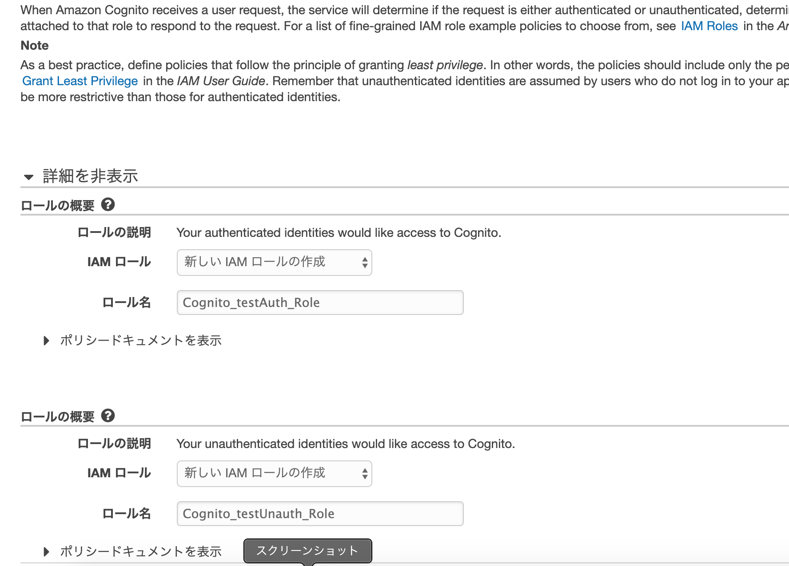
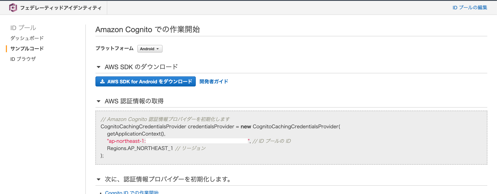

本記事はQrunchからの転載です。
FlutterでS3へファイルをアップロードするための公式のライブラリはありませんが、有志によるライブラリamazon_s3_cognitoがあります。 今回はこちらの紹介+forkしてちょっと修正したのでよければ使ってねという話になります。
事前準備
AWS cognitoでIDプールを作っておく必要があります。
cognitoのページを開くと以下のような表示がされるので、「IDプールの管理」を押します。

新しいIDプールの作成を押し、以下のような感じで設定をします。

次のページでRoleのポリシーの設定ができますので、「詳細を表示」 -> 「ポリシードキュメントを表示」 からポリシーを編集します。Uauthと書いてある方だけ編集すればOKです。 
ポリシーは以下のようにすれば大丈夫ですが、バケット名は自分で適当なものに変更してください。
{
"Version": "2012-10-17",
"Statement": [
{
"Sid": "VisualEditor0",
"Effect": "Allow",
"Action": [
"mobileanalytics:PutEvents",
"cognito-sync:*"
],
"Resource": "*"
},
{
"Sid": "VisualEditor1",
"Effect": "Allow",
"Action": "s3:*Object",
"Resource": "arn:aws:s3:::(バケット名)*"
}
]
}
おそらくこれでAWS側の設定は大丈夫かと思います。
Flutter側からファイルを送信する
amazon_s3_cognitoをpubspec.yamlに追加して、flutter pub getしたら使う準備はできました。 次のようなコードでファイルをS3に送ることができます。
import 'package:amazon_s3_cognito/amazon_s3_cognito.dart';
import 'package:amazon_s3_cognito/aws_region.dart';
String uploadedImageUrl = await AmazonS3Cognito.upload(
imagePath,
BUCKET_NAME,
IDENTITY_POOL_ID,
IMAGE_NAME,
AwsRegion.AP_NORTHEAST_1,
AwsRegion.AP_NORTHEAST_1)
- imagePathはスマートフォン内の送りたいファイルのパスを指定します。
- BUCKET_NAMEはS3のバケット名を指定します。
- IDENTITY_POOL_IDはさきほど設定したAWS cognitoから次のような詳細ページにいくことで、取得できます。以下のIDプールのIDと書かれている行のダブルクォーテーションの部分をコピペすればOKです。 
- IMAGE_NAMEはS3のバケット以下のファイルの保存先のパスを指定します。
- AwsRegion.AP_NORTHEAST_1はregionを指定しています。2つ目はsub region？の設定らしいですが、なければ同じもので特に問題ありません。
返り値はS3上の保存先のファイルパスになります。失敗したときは"Failed"だったり空のパスが渡ってきます。
あれ、iOSでは失敗する…
Androidではここまでの設定等でうまくいったのですが、iOSでは常にうまく送信できませんし、空のパスが返り値として受け取られます。 実はこれはアクセス権の問題でうまく動きませんでした。iOS版の実装をみると、publicなバケットにしかファイルを送れないようになっていました。 というわけで、amazon_s3_cognitoのレポジトリをforkして、privateなバケットにもファイルを送れるように修正しましたので、よければ使ってみてください。 https://github.com/opqrstuvcut/amazon_s3_cognito
pubspec.yamlには以下のようにかけばOKです。
amazon_s3_cognito:
git:
url: https://github.com/opqrstuvcut/amazon_s3_cognito